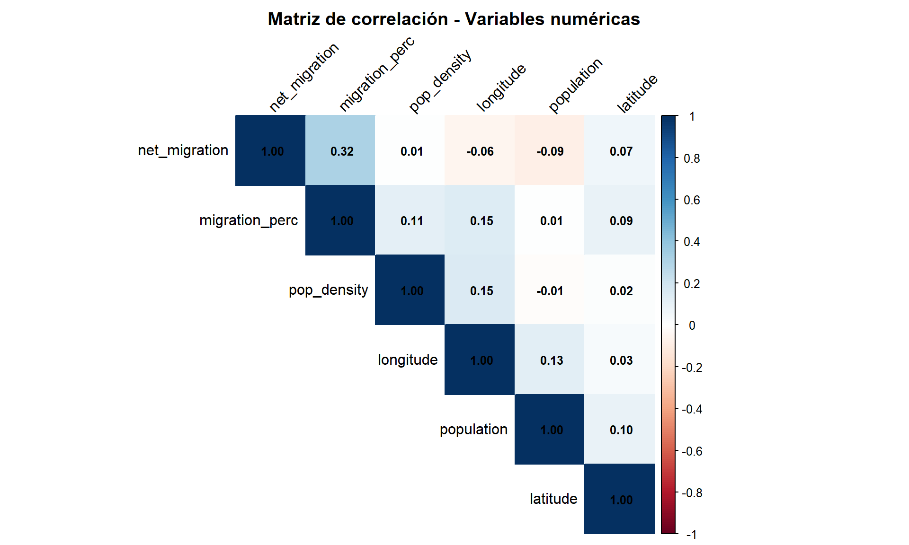
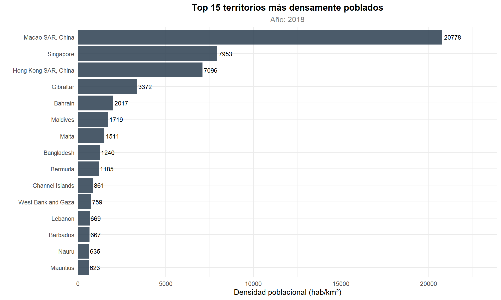

Capítulo 7 Correlación y Densidad Poblacional
7.1 Análisis de Correlación
vars_numericas <- df_paises %>%
select(population, pop_density, net_migration, migration_perc, longitude, latitude) %>%
drop_na()if (nrow(vars_numericas) > 10) {
cor_matrix <- cor(vars_numericas, use = "complete.obs")
kable(round(cor_matrix, 3), caption = "Matriz de correlación entre variables numéricas")
}| population | pop_density | net_migration | migration_perc | longitude | latitude | |
|---|---|---|---|---|---|---|
| population | 1.000 | -0.015 | -0.090 | 0.006 | 0.128 | 0.099 |
| pop_density | -0.015 | 1.000 | 0.006 | 0.113 | 0.150 | 0.015 |
| net_migration | -0.090 | 0.006 | 1.000 | 0.317 | -0.055 | 0.069 |
| migration_perc | 0.006 | 0.113 | 0.317 | 1.000 | 0.149 | 0.090 |
| longitude | 0.128 | 0.150 | -0.055 | 0.149 | 1.000 | 0.034 |
| latitude | 0.099 | 0.015 | 0.069 | 0.090 | 0.034 | 1.000 |
La tabla de correlaciones de Pearson permite evaluar la fuerza y dirección de las asociaciones lineales entre las variables numéricas del dataset. Se observa que la mayoría de los coeficientes son cercanos a cero, lo que indica una baja colinealidad entre las variables y sugiere que cada indicador aporta información relativamente independiente al análisis. La correlación más destacada se presenta entre
net_migrationypopulation, lo cual responde a un efecto de escala: los países con mayor población tienden a registrar flujos migratorios absolutos más elevados, sin que ello implique necesariamente una mayor propensión migratoria per cápita. Las coordenadas geográficas (latitudeylongitude) muestran correlaciones débiles con el resto de las variables, indicando que la posición geográfica por sí sola no es un predictor directo de los indicadores demográficos analizados.
if (nrow(vars_numericas) > 10) {
corrplot(cor_matrix,
method = "color", type = "upper", order = "hclust",
addCoef.col = "black", tl.col = "black", tl.srt = 45,
title = "Matriz de Correlación - Variables Numéricas",
mar = c(0, 0, 2, 0), number.cex = 0.8)
}
Figure 7.1: Mapa de calor de la matriz de correlación
7.2 Densidad Poblacional
7.2.1 Top 15 Territorios Más Densos
top_densidad <- df_paises %>%
filter(year == max(year, na.rm = TRUE) & !is.na(pop_density)) %>%
arrange(desc(pop_density)) %>%
head(15)
kable(top_densidad %>% select(country, pop_density, population, incomeLevel),
caption = "Top 15 territorios más densamente poblados")| country | pop_density | population | incomeLevel |
|---|---|---|---|
| Macao SAR, China | 20777.5003 | 631636 | High income |
| Singapore | 7952.9984 | 5638676 | High income |
| Hong Kong SAR, China | 7096.1905 | 7451000 | High income |
| Gibraltar | 3371.8000 | 33718 | High income |
| Bahrain | 2017.2737 | 1569439 | High income |
| Maldives | 1718.9867 | 515696 | Upper middle income |
| Malta | 1511.0312 | 483530 | High income |
| Bangladesh | 1239.5793 | 161356039 | Lower middle income |
| Bermuda | 1184.5926 | 63968 | High income |
| Channel Islands | 861.1061 | 170499 | High income |
| West Bank and Gaza | 758.9846 | 4569087 | Lower middle income |
| Lebanon | 669.4941 | 6848925 | Upper middle income |
| Barbados | 666.6070 | 286641 | High income |
| Nauru | 635.2000 | 12704 | Upper middle income |
| Mauritius | 623.3020 | 1265303 | Upper middle income |
ggplot(top_densidad, aes(x = reorder(country, pop_density), y = pop_density)) +
geom_bar(stat = "identity", fill = "#F39C12", alpha = 0.85) +
geom_text(aes(label = round(pop_density, 0)), hjust = -0.1, size = 3.2) +
coord_flip() +
labs(title = "Top 15 Territorios Más Densamente Poblados",
subtitle = paste("Año:", max(df_paises$year, na.rm = TRUE)),
x = "", y = "Densidad Poblacional (hab/km²)") +
theme_minimal(base_size = 11) +
theme(plot.title = element_text(face = "bold", hjust = 0.5),
plot.subtitle = element_text(hjust = 0.5, color = "grey50")) +
scale_y_continuous(expand = expansion(mult = c(0, 0.15)))
Figure 7.2: Territorios con mayor densidad poblacional
El gráfico de barras del Top 15 revela un patrón consistente: los territorios con mayor densidad poblacional son predominantemente ciudades-estado, regiones administrativas especiales o territorios insulares de superficie reducida. Macao, Singapur y Hong Kong encabezan la lista con densidades que superan ampliamente las 1,000 hab/km², lo cual se explica por la relación inversa entre la densidad \(\rho = P/A\) y la superficie territorial \(A\). Estos territorios, a pesar de contar con poblaciones relativamente pequeñas en términos absolutos, concentran a sus habitantes en áreas extremadamente reducidas, generando indicadores de densidad que no son directamente comparables con los de países de extensión territorial convencional. Es importante destacar que la mayoría de estos territorios pertenecen a categorías de ingreso alto, lo que sugiere que las altas densidades no están necesariamente asociadas a condiciones de hacinamiento.